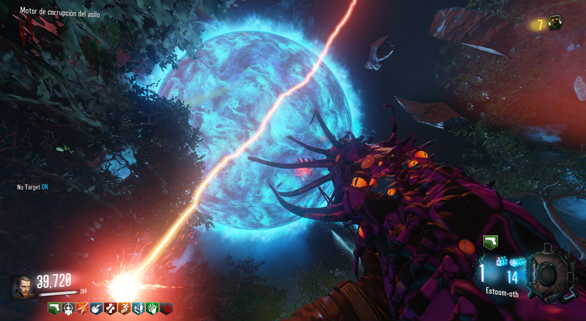
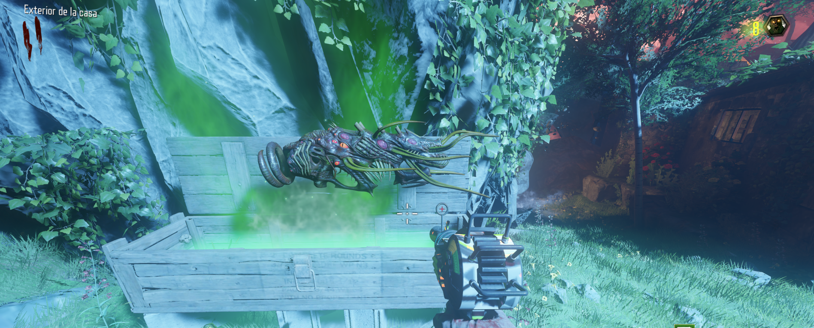
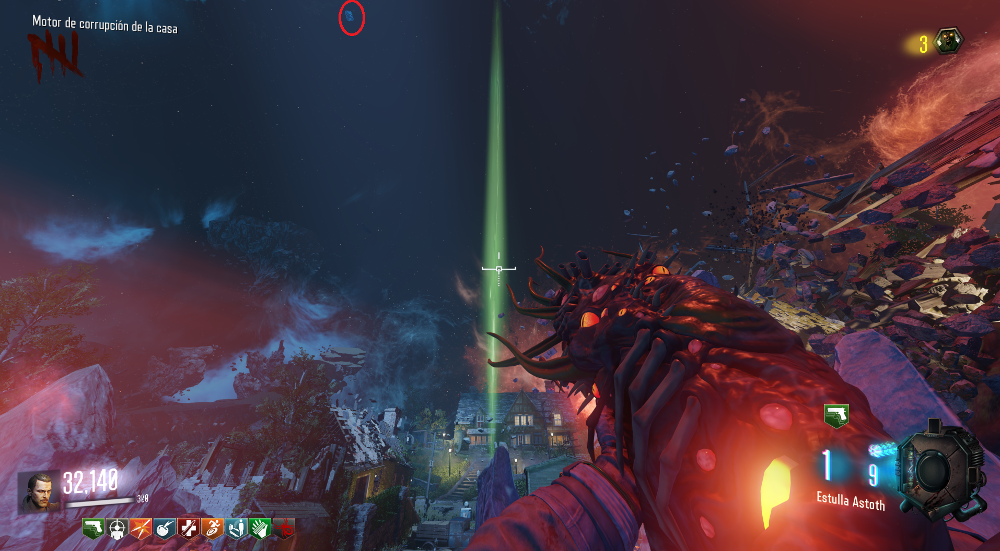
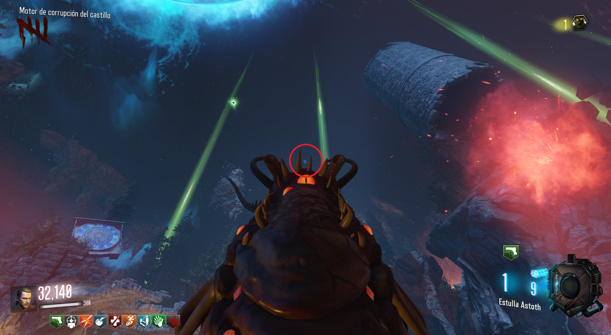
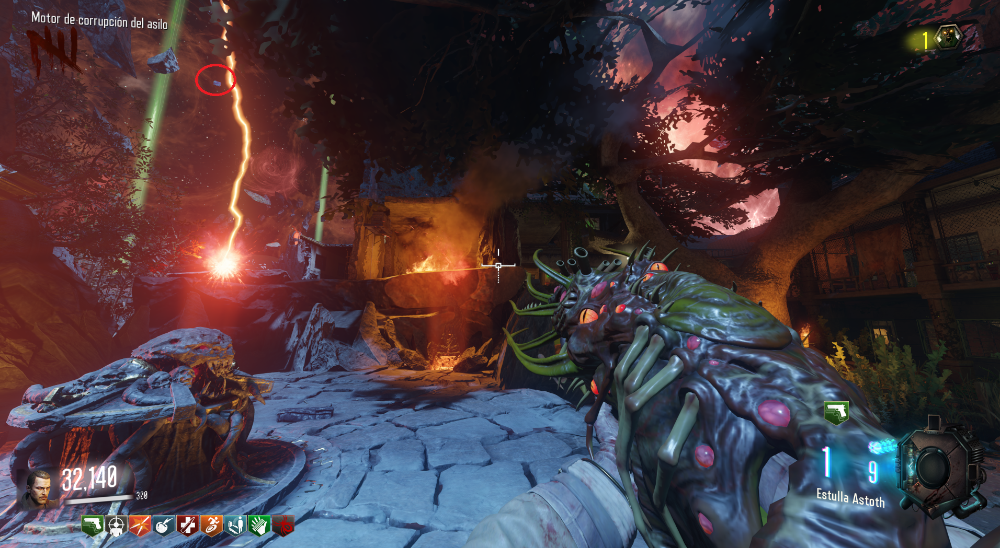
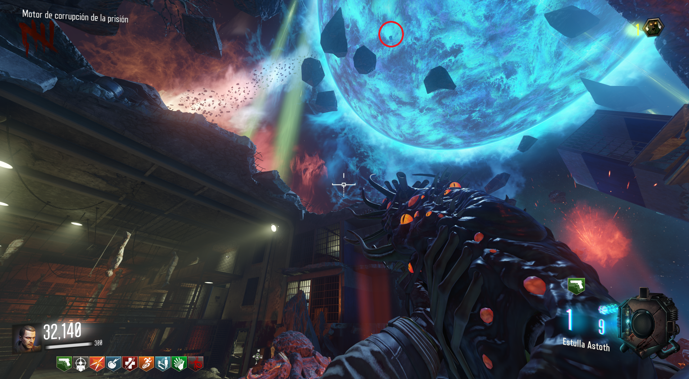
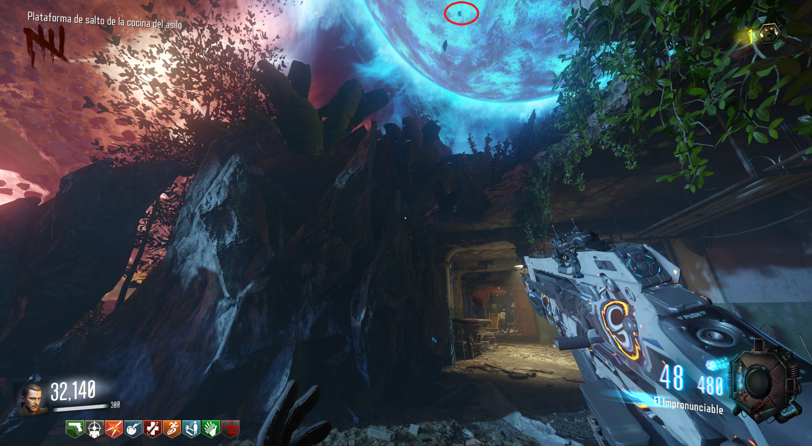
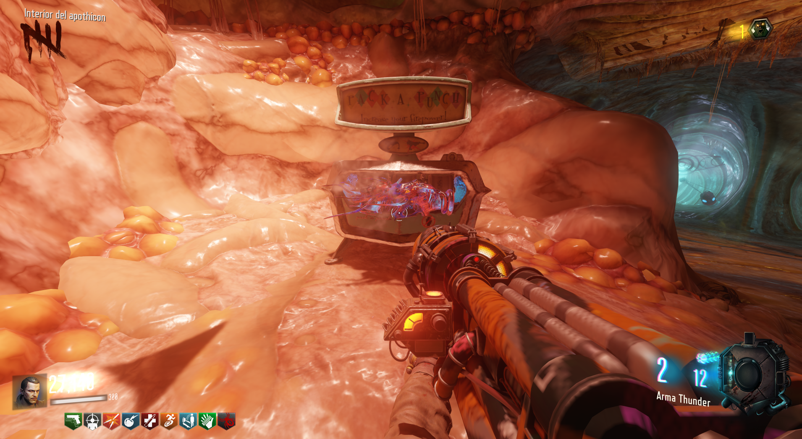

Conseguir y mejorar el Apothicon (Revelations)

Primera parte: La manera de conseguir el Apothicon será a través de la caja misteriosa.

Segunda parte: Para mejorarlo tendremos que absorber 5 piedras azules que están en el cielo.
The House

Der Eisendrachen

Verrückt

Mob of the Dead

La lanzadera de Verrückt que va a Mob of the Dead

Tercera parte: Una vez hecho esto, podremos ir al PaP y mejorar el Apothicon.
